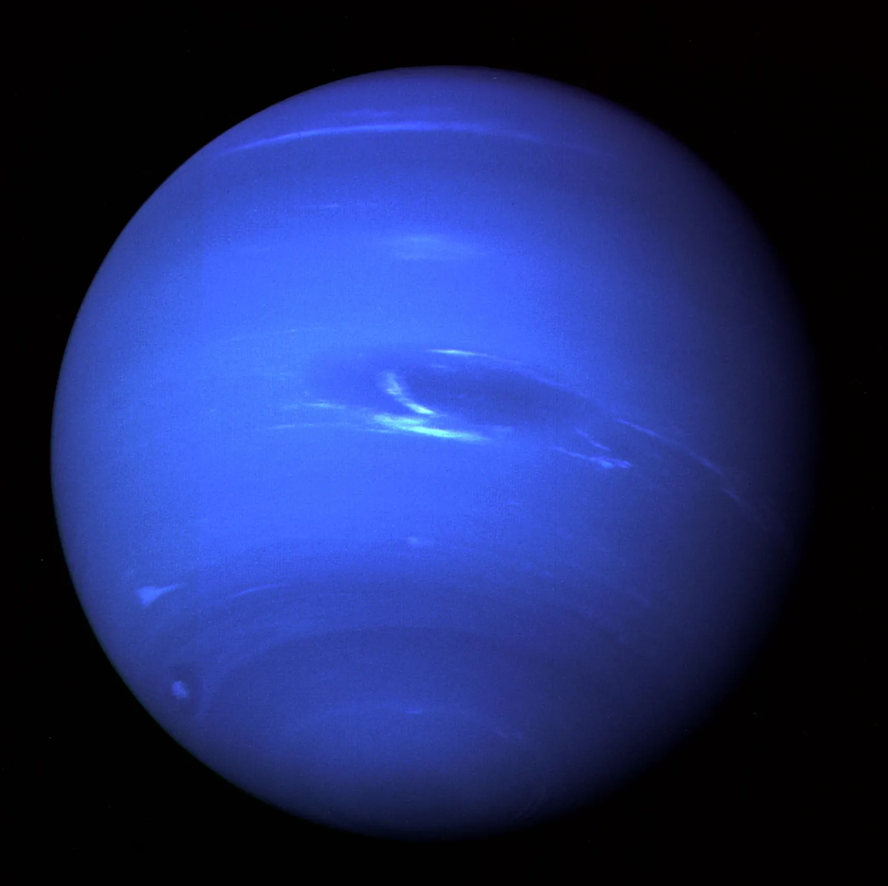
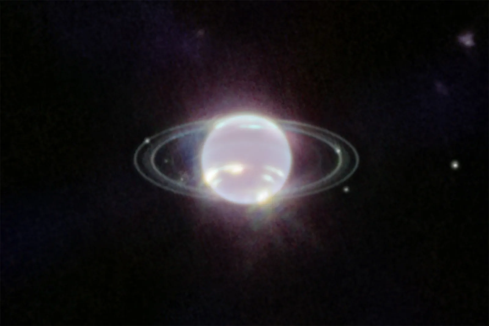

Netuno é o oitavo e mais distante planeta do Sistema Solar, um gigante gelado.

Em setembro de 2022, o Telescópio Espacial James Webb capturou imagens impressionantes de Netuno, revelando seus anéis com uma clareza não vista em mais de três décadas.

Netuno é o oitavo planeta do Sistema Solar e o mais distante do Sol. É um gigante gelado com massa 17 vezes a da Terra, formado por um núcleo rochoso, uma camada de água, amônia e metano, e uma atmosfera turbulenta de hidrogênio e hélio. Possui os ventos mais rápidos do Sistema Solar (até 2.000 km/h) e cor azul devido ao metano. Tem 16 luas conhecidas, sendo Tritão a maior, e um sistema de anéis tênue e irregular. Foi descoberto em 1846 por meio de cálculos matemáticos. A única sonda a visitá-lo foi a Voyager 2, em 1989.